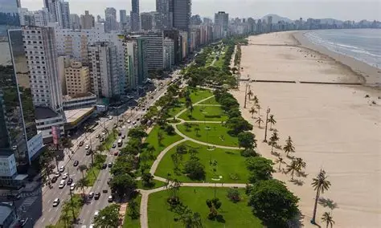

Museu Pelé – Espaço dedicado à trajetória do maior jogador de futebol da história.
📍 Endereço: Largo Marquês de Monte Alegre, 1 – Valongo, Santos – SP.

Santos, localizada no litoral paulista, é uma das cidades mais antigas do Brasil e referência em turismo, cultura e economia. Famosa por abrigar o maior porto da América Latina, também encanta pela orla urbana com a maior extensão de jardim à beira-mar do mundo, além de seu patrimônio histórico e esportivo.
Orla da Praia de Santos (Jardim da Orla) – Maior jardim frontal de praia do mundo, cartão-postal da cidade. agitada.
📍 Endereço: Av. Presidente Wilson, s/n – Gonzaga, Santos – SP.
Museu Pelé – Espaço dedicado à trajetória do maior jogador de futebol da história.
📍 Endereço: Largo Marquês de Monte Alegre, 1 – Valongo, Santos – SP.